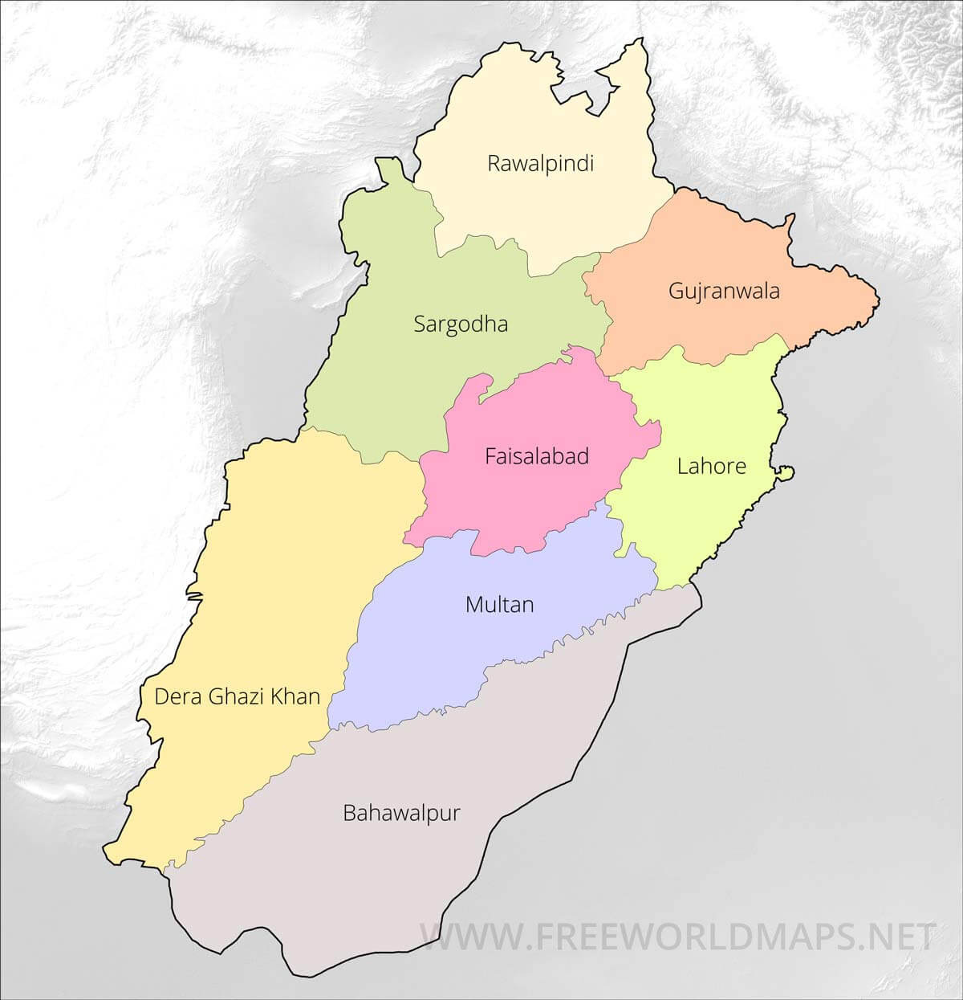

Culture of Punjab:
"The Land of Five Rivers"

"The word Punjab, literally means, the land of five rivers."
Punjab is another province of Pakistan that is known world-widely as it's the most prominent culture of Pakistan. The meaning of Punjab can itself be seen from its initials Punj which means fives, and Aab which means water/river.
As there are five rivers present that flows from Punjab, and they are River
- Ravi.
- River Sindh.
- River Sutlej.
- River Chenab.
- River Jhelum.
The land of Punjab is well-known as the land of five rivers.
Punjabi culture is the culture of Punjabi people that is known globally as the oldest, and the richest culture in the history of the world. They have different casts which include Gujjar, Rajput, Sheikh, Syed, Arai. The main place of the Indus valley civilization in Punjab was the city of Harrapa.
People of Punjab have a specific language that represents them, and it is known as Punjabi. When you will see someone talking in Punjabi, you will instantly recognize them as Punjabis who have come from Punjab or are residing in another province but belong to Punjab.
Language Punjabi has been originated from Sanskrit Punjab that has always been a place of great Fighters, and Saints. Bhangra is the music of Punjab which is spreading all around the world, and practiced by other Asian countries too.
Punjabis are too hardworking and are very much fond of dance, and music which you will find in their Bhangra beats too. Punjabis are quite moderate, and their mild nature can be seen in their behavior. You will see these people as religious, and fashionable at the same time.
Punjabi food is too famous in every country of the world, and people are crazy about Punjab foods. Many foreigners and tourists visit Pakistan to enjoy the actual taste of Punjabi food. Punjab is also famous for its crockery, as well as various ancient buildings.
Facts and Figures about Punjab Province:
The salient facts and figures about the province
- Population of Punjab= 11120422
- Total Area= 205,344 sq.km
- Capital of Punjab= Lahore
- Literacy Rate= 63 %
- Districts= 36
- Density= 398 Sq. km.
- Divisions= 9
- Languages spoken in Punjab
- Punjabi
- Urdu
- Saraiki
- Pothowari.
Punjabi Culture.
Punjabi culture is prominent worldwide that showcases the culture of Pakistan. Punjabi culture is the richest and the oldest culture around the globe. In Punjab, there are different casts including,
- Arai
- Gujjar
- Sheikh Syed
- Rajput
- etc.
Punjabi people are very hardworking, welcoming, and sociable. Most of them belong to the field of agriculture as they live in the land of five rivers. They are fond of Bhangras, dance, and music. They have mild nature.
They are not only religious but also stand along with the fashion.
Punjabi food is famous in the whole world and many tourists and foreigners who come to Pakistan enjoy the delicious taste of the Punjabi food in Punjab province.
Punjab is very famous for its ancient buildings and Qila Darawar and the city of Harappa are among the ancients.